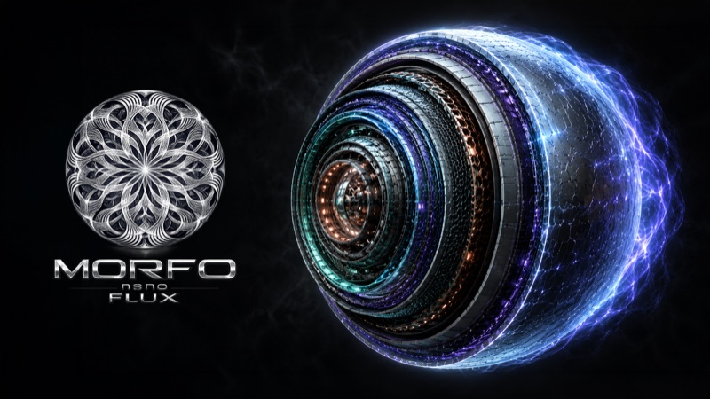

-
Apeiron Evolution Theory
Part I · Part II · Do We Need an Observer?
-
LOTUS Mechanism — Ethical Oversight & Early Warning of Artificial Intelligence
A Proposal for the Ethical Observation, Evaluation, Simulation, and Reorientation of Artificial Intelligence Systems
-

Morpho / Nano / Flux Technology
What kind of technological architecture would look like a UAP — if it existed.The full model: structure, operating principles, and the physics behind the phenomenon.